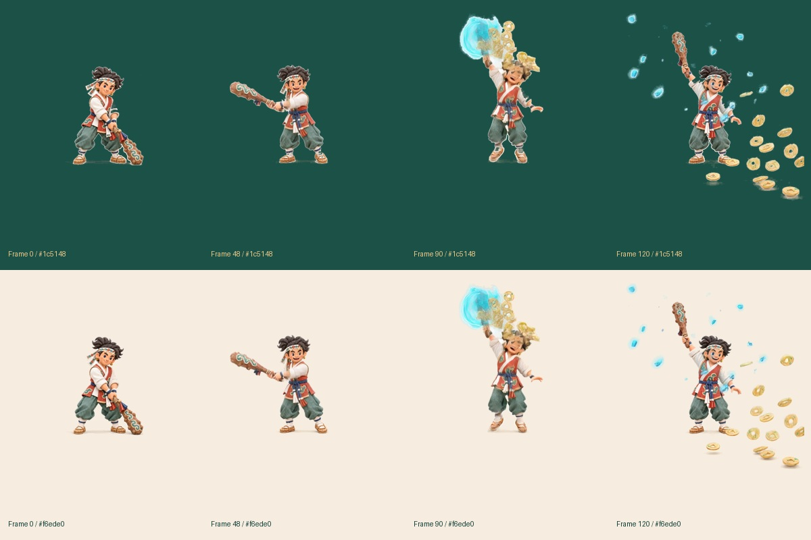

흰 배경 없이, 도깨비가 건네는 엽전.
같은 투명 영상 파일을 한지와 녹청 위에서 재생합니다. 원본 MP4는 그대로 보존했습니다.
한지
녹청
투명 WebM 파일 · 보존한 원본 MP4 · 알파·프레임 검증 기록
원본 움직임의 투명 처리 프레임 확인

같은 투명 영상 파일을 한지와 녹청 위에서 재생합니다. 원본 MP4는 그대로 보존했습니다.
투명 WebM 파일 · 보존한 원본 MP4 · 알파·프레임 검증 기록
